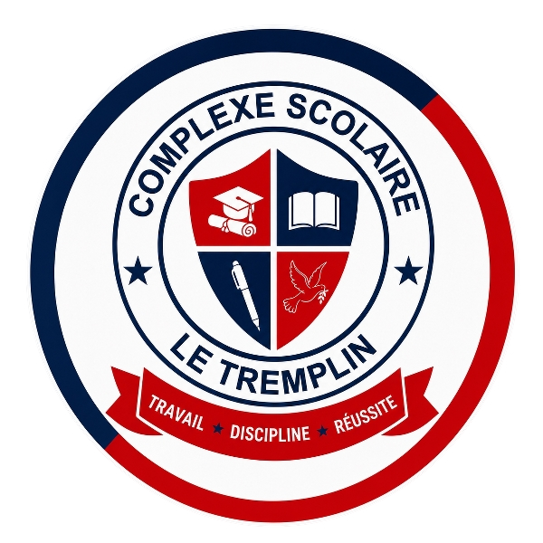

Biographie
KASHIBA ABEDI Oscar est un éducateur passionné et visionnaire engagé pour l'excellence scolaire. Convaincu que l'éducation est le socle de tout développement durable, il a fondé en 2022 le Complexe Scolaire Le Tremplin à Kasumbalesa.
À travers cette institution, Monsieur Oscar incarne une vision éducative qui allie rigueur scolaire, éducation aux valeurs et accompagnement personnalisé. Son engagement repose sur trois piliers : le travail, la discipline et la réussite.
Reconnu pour son dévouement et sa bienveillance, il suit de près le parcours de chaque élève, veillant à ce que chacun développe ses talents et construise un avenir prometteur. Son leadership a fait du CS Le Tremplin une référence à Kasumbalesa.

L'effort comme fondement de la réussite
Le respect et la rigueur au quotidien
L'ambition de dépasser ses limites